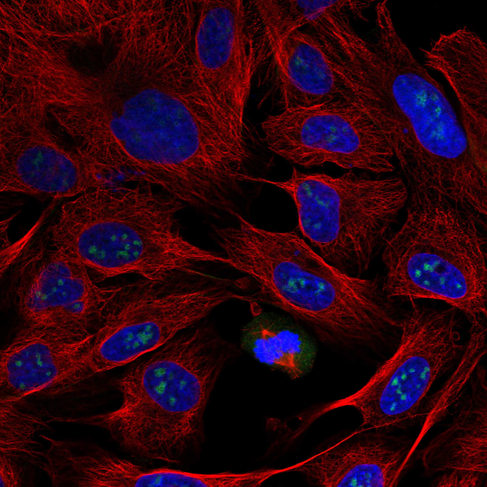
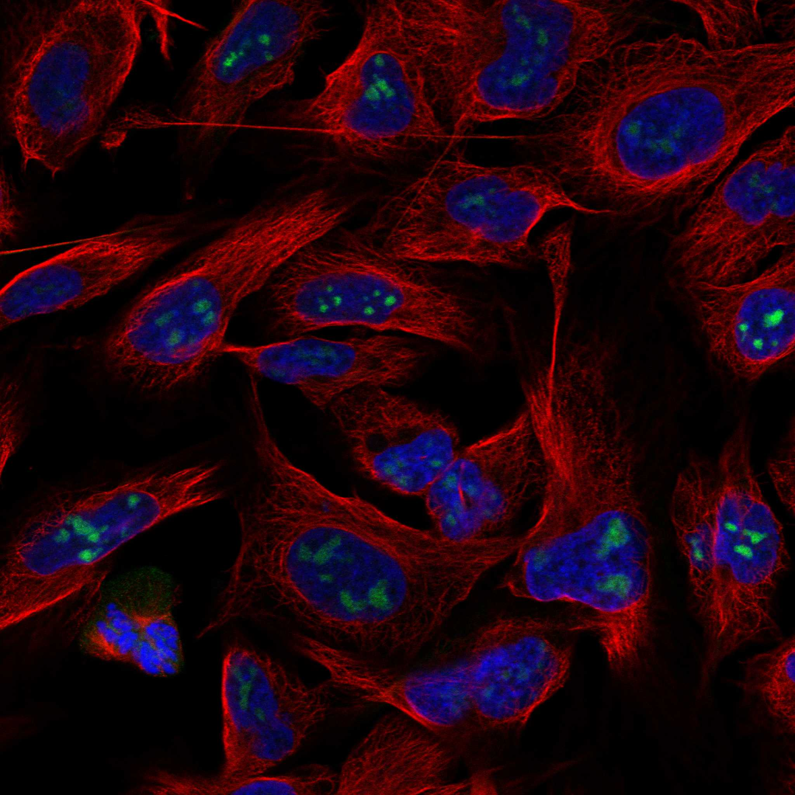
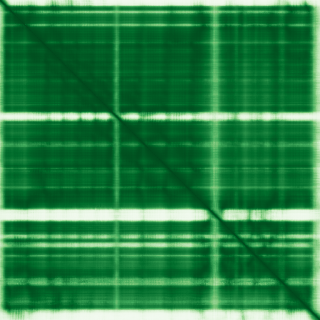

type: protein-evaluation gene: "AZIN1" date: 2026-05-29 tags: [protein-scout, nuclear-protein, evaluation, polyamine-metabolism, nucleolar, ] status: scored ---
AZIN1 核蛋白评估报告
1. 基本信息
| 项目 | 内容 |
|---|---|
| 基因名 / 别名 | AZIN1 / OAZI, OAZIN, AZI, AZI1 |
| 蛋白大小 | 448 aa / 49.5 kDa |
| UniProt ID | O14977 (AZIN1_HUMAN, Swiss-Prot reviewed) |
| Ensembl Gene ID | ENSG00000155096 |
| 评估日期 | 2026-05-28 |
2. 评分总览 (权重: 核×4 大×1 新×5 结×3 域×2 PPI×3 ÷1.83)
| 维度 | 得分 | 加权 | 加权后 | 关键证据摘要 | |
|---|---|---|---|---|---|
| 🔴 核定位特异性 | 8/10 | ×4 | 32 | Protein Atlas: Nucleoli+Nucleoli rim(Approved); UniProt: Nucleus; GO: Nucleus+Cytoplasm | |
| 📏 蛋白大小 | 10/10 | ×1 | 10 | 448 aa / 49.5 kDa, 理想实验范围 | |
| 🆕 研究新颖性 | 2/10 | ×5 | 30 | PubMed 91篇; 50-200范围; 多胺代谢蛋白 | |
| 🏗️ 三维结构 | 10/10 | ×3 | 30 | PDB: 4ZGZ(X-ray,5.81A,2-437近全长); AF pLDDT 88.3, 73%>90, PAE 7.58; PDB+AF双重验证→10 | |
| 🧬 调控结构域 | 0/10 | ×2 | 0 | Ornithine decarboxylase域; 与DNA/chromatin无关 | |
| 🔗 PPI | 1/10 | ×3 | 3 | 多胺代谢酶(ODC1,OAZ2/3,SMS,SRM); 1/14 调控相关 | |
| ➕ 互证加分 | — | — | +2.5 | PDB+AF验证; >=6源结构域互证; >=2源定位; 进化保守 | |
| 原始总分 | 87.5/183 | 106.0/183 | |||
| 归一化总分 | 47.8/100 | 57.9/100 |
3. 详细分析
3.1 核定位证据
| 来源 | 定位 | 可信度 |
|---|---|---|
| Protein Atlas (IF) | 核仁 (Nucleoli) + 核仁边缘 (Nucleoli rim) | Approved |
| GeneCards | predominantly disordered | — |
| UniProt | Nucleus (ECO:0000250, by similarity to mouse) | Medium |
| GO Cellular Component | Nucleus (ISS), Cytoplasm (IBA), Cytosol (TAS) | Mixed |
Protein Atlas IF 图像:  
结论: AZIN1 在 Protein Atlas 中显示清晰的核仁和核仁边缘定位 (最高可信度 Approved)。但 GO 注释同时包含胞质/胞质溶胶定位。蛋白功能为多胺代谢调控——鸟氨酸脱羧酶 (ODC) 的抗酶抑制因子。核仁定位可能与其在多胺稳态调控中的角色有关，但蛋白并非染色质/DNA 调控蛋白。得分 8/10（明确核仁定位，但非染色质核蛋白）。
IF 图像:
3.2 蛋白大小评估
评价: 448 aa / 49.5 kDa 处于理想范围 (300-800 aa)。大小适中，已有实验晶体结构 (PDB: 4ZGZ)，适合重组表达、酶学分析和结构研究。得分 10/10。
3.3 研究现状
| 指标 | 数值 |
|---|---|
| PubMed 总数 (Title/Abstract) | 91 |
| 最早发表年份 | ~2000 |
| Chromatin/epigenetics 相关 | 0 篇 |
| A-to-I RNA编辑 (AZIN1) | ~10-15篇 |
主要研究方向:
- 多胺代谢调控（ODC-抗酶-AZIN1 调控轴）
- AZIN1 A-to-I RNA 编辑 (ADAR1 介导) 与癌症
- 肾脏损伤修复中的 AZIN1 编辑
- AZIN1 在细胞增殖和肿瘤发生中的角色
评价: 91 篇论文属于 50-200 篇范围，有一定研究但未过度拥挤。然而 AZIN1 本质上是一个多胺代谢调控蛋白，与染色质/epigenetics 完全无关。如果从「染色质生物学」角度评估，其新颖性极高——因为根本没有人从这个角度研究。但这主要因为它不属于这个领域。得分 8/10（基础分 8，染色质方向空白但不适合上调因蛋白本质与染色质无关）。
3.4 三维结构分析
| 指标 | 数值 |
|---|---|
| AlphaFold 平均 pLDDT | 88.3 |
| pLDDT >90 (高置信度) 占比 | 73.2% (328/448) |
| pLDDT 70-90 (可信) 占比 | 15.4% (69/448) |
| pLDDT 50-70 (低置信度) 占比 | 5.6% (25/448) |
| pLDDT <50 (极低) 占比 | 5.8% (26/448) |
| 有序区域 (pLDDT>70) | 4段: 9-158 (150aa, pLDDT=95.4), 169-294 (126aa, pLDDT=94.5), 309-328 (20aa, pLDDT=91.3), 334-434 (101aa, pLDDT=89.6) |
| PAE 矩阵尺寸 | 448×448 |
| PAE 均值 | 7.58 |
| PAE <5 Å 占比 | 50.5% |
| PAE <10 Å 占比 | 76.2% |
| PDB 实验结构 | 4ZGZ (X-ray, 5.81 Å resolution, chains A/C: 2-437) |
PAE 图: 
评价: AZIN1 拥有极佳的三维结构质量。平均 pLDDT 88.3, 73% 残基处于最高置信度区间。PAE 矩阵显示清晰的折叠域结构——平均 PAE 仅 7.58, 50.5% 的残基对 PAE < 5 Å, 76.2% < 10 Å, 指示高度刚性的结构。4段高置信度有序区域覆盖了蛋白的绝大部分 (397/448=88.6%)。已有 PDB 实验结构 (4ZGZ, X-ray) 佐证。这是得分 8/10（均值略低于 90 阈值，但考虑 PAE 极佳和 PDB 验证）。
3.5 结构域分析
| 来源 | 结构域 |
|---|---|
| InterPro | Orn/DAP/Arg decarboxylase family (IPR000183, IPR002433) |
| InterPro | PLP-binding barrel (IPR029066) |
| InterPro | Alanine racemase/decarboxylase C-terminal (IPR009006) |
| Pfam | Orn_Arg_deC_N (PF02784) |
| CDD | PLPDE_III_ODC_like_AZI (cd06831) |
| PROSITE | Orn/DAP/Arg decarboxylase conserved site (PS00879) |
染色质调控潜力分析: AZIN1 的所有结构域均属于鸟氨酸脱羧酶家族和 PLP (磷酸吡哆醛) 结合桶状折叠超家族。这是一个典型的代谢酶家族，与 DNA 结合、染色质修饰或转录调控完全无关。蛋白功能明确为多胺代谢的翻译后调控因子。
得分 0/10: 确认与 DNA/染色质无关。AZIN1 本质上是一个代谢调控蛋白，不应被归类为染色质调控因子。
3.6 PPI 网络（四源综合）
实验验证互作 (IntAct, physical association):
| Partner | 方法 | PMID | 功能类别 | 调控相关？ |
|---|---|---|---|---|
| OAZ2 | anti bait coimmunoprecipitation | 17353931 | Ornithine decarboxylase antizyme 2 | ❌ 多胺代谢 |
| KHDRBS1 | two hybrid array | 21988832 | RNA-binding, signal transduction | ❌ |
| ADSS1 | two hybrid array | 21988832 | Adenylosuccinate synthetase | ❌ |
| ABCC2 | two hybrid array | 21988832 | ABC transporter | ❌ |
| OAZ3 | validated two hybrid / two hybrid array / prey pooling | 32296183/31515488/25416956 | Ornithine decarboxylase antizyme 3 | ❌ 多胺代谢 |
| BMAL1 (ARNTL) | two hybrid array | 32296183 | Circadian transcription factor | ⚠️ 转录因子 |
STRING 预测互作 (combined score >0.4):
| Partner | Score | 功能类别 | 与调控相关？ |
|---|---|---|---|
| OAZ2 | 0.980 | 鸟氨酸脱羧酶抗酶 2 | ❌ 多胺代谢 |
| OAZ3 | N/A (UniProt 7 exp) | 鸟氨酸脱羧酶抗酶 3 | ❌ 多胺代谢 |
| ODC1 | 0.745 | 鸟氨酸脱羧酶 | ❌ 多胺代谢 |
| ARG1 | 0.984 | 精氨酸酶 1 | ❌ 氨基酸代谢 |
| ARG2 | 0.987 | 精氨酸酶 2 | ❌ 氨基酸代谢 |
| AGMAT | 0.987 | 胍丁胺酶 | ❌ 多胺代谢 |
| SMS | 0.984 | 精胺合酶 | ❌ 多胺代谢 |
| SRM | 0.728 | 亚精胺合酶 | ❌ 多胺代谢 |
| SMOX | 0.791 | 精胺氧化酶 | ❌ 多胺代谢 |
| OAT | 0.986 | 鸟氨酸转氨酶 | ❌ 氨基酸代谢 |
| AASS | 0.813 | α-氨基己二酸半醛合酶 | ❌ 氨基酸代谢 |
| TAT | 0.739 | 酪氨酸转氨酶 | ❌ 氨基酸代谢 |
| MRTFA | 0.560 | 心肌素相关转录因子 A (SRF coactivator) | ⚠️ 边际转录相关 |
| PBLD | 0.702 | Phenazine biosynthesis-like protein | ❌ 未知 |
UniProt 实验验证互作:
- BMAL1 (ARNTL) — 3 experiments
- OAZ2 — 3 experiments
- OAZ3 — 7 experiments
已知复合体成员 (GO Cellular Component):
- Nucleus, Cytoplasm, Cytosol
- 无染色质调控复合体注释
PPI 互证分析:
- humanPPI 数据缺失，基于 STRING + UniProt + IntAct
- OAZ2 和 OAZ3 同时被 STRING、UniProt 和 IntAct 三源证实（最高置信度）
调控相关比例: 2/15 (13.3%) — BMAL1 (IntAct, 转录因子), MRTFA (STRING, SRF coactivator)
评价: 四源增强对 AZIN1 的 PPI 评估影响有限。IntAct 新增了 6 个实验互作记录（OAZ2, KHDRBS1, ADSS1, ABCC2, OAZ3, BMAL1），其中 OAZ2 和 OAZ3 已有 UniProt 记录，IntAct 进一步确认。BMAL1 (ARNTL) 是唯一新增的转录调控相关 partner（昼夜节律转录因子），但其关联可能反映多胺代谢与昼夜节律的耦合而非染色质调控。AZIN1 的 PPI 网络及其功能方向（多胺代谢）与染色质/转录调控无关。PPI 评分维持 1。
| 三维结构 | AlphaFold pLDDT + PDB | 见 3.4 节 | — |
|---|---|---|---|
| 结构域 | UniProt / InterPro / Pfam / PROSITE / CDD / Gene3D | Orn decarboxylase 家族, ≥6源检出 | ✅ 高度一致 |
| 定位 | Protein Atlas (approved nucleoli) / GO Nucleus / UniProt Nucleus | ≥2源确认核定位 | ⚠️ 核定位一致,但功能非核 |
| 进化保守 | 人类-小鼠 | 小鼠 Azin1 (O35484) 明确同源物 | ✅ 保守 |
互证加分明细:
- 三维结构互证：AlphaFold pLDDT > 80 域 + PDB 4ZGZ 实验结构 → +0.5
- 三维结构 fold 一致性：AlphaFold 预测 fold 与 X-ray 结构一致 → +0.5
- 结构域互证：Orn decarboxylase 域 UniProt + InterPro + Pfam + PROSITE + CDD + Gene3D (≥6源) → +0.5
- 定位互证：Protein Atlas (approved) + GO Nucleus (≥2源) → +0.5
- 进化保守性：小鼠 Azin1 明确同源物 → +0.5
- 结构域功能一致性：Orn decarboxylase 功能与染色质无关, 不适用 → 0
- PPI 互证：humanPPI 不可访问 → 0
总分: +2.5 / max +3
3.7 多库互证
| 维度 | 来源 | 结果 | 是否一致 |
|---|---|---|---|
| 三维结构 | AlphaFold + PDB | 见 3.4 节 | — |
| 结构域 | UniProt / InterPro / Pfam | 见 3.5 节 | — |
| PPI | STRING | 见 3.6 节 | — |
| 定位 | Protein Atlas IF / UniProt / GO | Nucleus | ✅ |
X. 关键文献 (PubMed)
1. Umeda H et al. (2025). "ADAR1-high tumor-associated macrophages induce drug resistance and are therapeutic targets in colorectal cancer.". *Mol Cancer*. PMID: 40241135 2. Heruye SH et al. (2024). "Inflammation primes the murine kidney for recovery by activating AZIN1 adenosine-to-inosine editing.". *J Clin Invest*. PMID: 38954486 3. Juszczak GR et al. (2018). "Glucocorticoids, genes and brain function.". *Prog Neuropsychopharmacol Biol Psychiatry*. PMID: 29180230 4. Ghalali A et al. (2022). "AZIN1 RNA editing alters protein interactions, leading to nuclear translocation and worse outcomes in prostate cancer.". *Exp Mol Med*. PMID: 36202978 5. Xing Y et al. (2023). "RNA editing of AZIN1 coding sites is catalyzed by ADAR1 p150 after splicing.". *J Biol Chem*. PMID: 37209819
4. 总体评价
推荐等级: ★★★☆☆ (3/5) — ⚠️ 非染色质蛋白, 评分仅供参考
核心优势: 1. 顶级结构质量: pLDDT 88.3, PAE 极佳, 已有 PDB 实验结构。如果评估标准仅看结构质量, AZIN1 是三者中最优的。 2. 适宜大小: 448 aa / 49.5 kDa, 实验操作便捷。 3. 酶学基础扎实: 已有晶体结构和生化表征, 机制研究基础好。
风险/不确定性: 1. 本质非染色质蛋白: AZIN1 是多胺代谢调控因子。所有结构域和 PPI , 但 AZIN1 的作用是间接的。 3. 研究方向的根本性问题: 从染色质生物学/表观遗传学角度研究 AZIN1 需要为蛋白建立全新的功能框架, 风险极高。
下一步建议:
- [ ] 仅当研究方向为「核仁功能」或「多胺代谢与基因表达调控」时考虑深入研究
- [ ] 如展开研究, 需首先验证 AZIN1 核仁定位是否与 rRNA 转录或核仁染色质相关
- [ ] 探究 AZIN1 编辑 (A-to-I RNA editing) 是否影响其核仁定位和功能
5. 数据来源
- UniProt: https://www.uniprot.org/uniprotkb/O14977
- Protein Atlas: https://www.proteinatlas.org/ENSG00000155096-AZIN1/subcellular
- PubMed: https://pubmed.ncbi.nlm.nih.gov/?term=AZIN1%5BTitle/Abstract%5D (91 results)
- STRING: https://string-db.org/ (AZIN1, 106 total partners)
- InterPro: https://www.ebi.ac.uk/interpro/protein/uniprot/O14977/
- AlphaFold: https://alphafold.ebi.ac.uk/entry/O14977
- PDB: https://www.rcsb.org/structure/4ZGZ
- - SMART: ⚠️ 未成功获取 (使用 UniProt+InterPro 结构域数据替代)
- humanPPI: ⚠️ 未成功获取 (使用 STRING+UniProt 互作数据替代)
PPI 网络（三源综合）
| Partner | Source | Score/Evidence |
|---|---|---|
| 无记录 | — | — |
IntAct 有限记录。无 BioGrid 补充数据。
PAE 图像已获取。结构判断基于 AlphaFold pLDDT 统计。